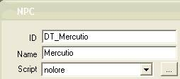

Dialogue Tutorial
Part 4: Topics
<< Back to Function/Variable Conditions <<
All right, it's time to give the residents of Neverland something to talk about. We're now going to switch from the "Greetings" tab to the "Topics" tab.
|
The list you see on the "Topics" tab is reflected in the game in three ways:
1. you'll see items from this list in the right-hand part of the in-game dialogue window
2. items from this list will be highlighted in dialogue window text; you can click on them to get more information
3. items from this list will be highlighted in journal entries; you can click in the journal to see what you've heard people say about the topic
Of course, you don't have access to the whole list in every conversation with every NPC. The way this works is as follows: every NPC has a list of topics they know about (they're filtered by conditions in the same way as greetings); and the player character has a list of topics they've heard about from some NPC (it's been mentioned in dialogue). A topic is available in a conversation if both the player and the NPC have the topic on their list.
There are two ways to give an NPC a topic:
1. By having the NPC use the keyword in a previous utterance, e.g. a greeting
2. By using the "AddTopic" command, in a script or the dialogue results box
|
Let's start by adding a general topic for everyone in Neverland. "Neverland" would be a good one. We need some kind of explanation for why it's surrounded by nothingness and always dark here.
Adding a topic
-
Open the Dialogue Window and click on the Topic tab. Make sure it's unfiltered (the "Filter for" box is blank).
-
Right-click in the Topics list and choose New. You'll see a text box at the end of the topic list.
-
Type Neverland and hit Return. Your new topic will appear in its alphabetical place in the list.
-
Now you have a topic; you just need to give NPCs something to say about it. Right-click in the Info/Response table, and choose "New".
-
Type or paste this text in the edit box:
Neverland is literally "in the middle of nowhere". Once it was in High Rock... but then the mayor, a powerful mage named Bellefigure, got involved in a battle of wills with Sheogorath. Sheogorath dared Belle to eliminate her entire village from the world, and offered her immortality if she succeeded. Belle accepted the wager, but she is not a cruel woman. She summoned Daedric servants and compelled them to move the village to this unoccupied corner of Oblivion, where it remains to this day.
-
We can check and see that this topic is going to be linked where we want it. Go back to one of the greetings that mentions "Neverland", and click the "Update Hyperlinks" button on the right side of the dialogue. You will see this word with a preceding "@" and a following "#", like this:
Hello, %PCRace. Welcome to our stagnant little backwater, @Neverland#.
|
Update Hyperlinks
The "update Hyperlinks" button displays an @ preceding and a # following a word which could display as a hyperlink in the in-game dialogue window. This is useful for finding links with other dialogue topics that perhaps you didn't intend to be there. However, the hyperlinks will only appear in-game if the NPC you are talking to has the linked topic on their topic list.
|
Now click the "update hyperlinks" button on the "Neverland" topic. You'll see that there are several terms here that could be hyperlinked: High Rock, Daedric, Sheogorath. If you check those topics in the topic list, though, you'll find that this probably won't cause any problems. The entries are filtered in such a way that Neverland NPCs won't say them.
-
Save and test. Since "Neverland" is now an official "topic", this word will be highlighted in all the NPC greetings we put in, and you'll see it in the in-game topics list. Click on Neverland, and you'll see your new text.
Topic chaining: using keywords
You could allow the player to learn more about a topic by clicking a highlighted word. Let's let the player ask about Oblivion.
Should we add a filter for this topic? That depends. If we don't, any NPC in the whole game who mentions the word "Oblivion" will be able to say this text.
If you do a text search (Edit | Find Text, and click on the Dialogue tab), you'll see that there are several topics that mention Oblivion.
This explanation would probably be suitable for any of them; however, it's probably safer in general to restrict any dialogue you add to NPCs in your mod.
-
So, add the condition "Cell: Neverland."
Test. You should find that all Neverlanders will now tell you about Oblivion, but only after it's "come up in conversation" (been mentioned in the Neverland topic).
Conditions for topics, and the No Lore variable
As we've just seen, topics have conditions just like greetings. One very useful condition involves a variable called "No Lore". This prevents certain NPCs from having standard topics that all other Vvardenfell residents have, like "Latest Rumors". It would make sense that Neverland residents, having been out of the loop for some time, wouldn't have these topics. Let's look at how to use the No Lore condition.
-

Open the Neverland cell, and select an NPC. Double-click him or her.
-
Drop down the "Script" list, and choose "nolore".
-
Take a look at the nolore script by clicking the button with three dots next to the script list. This is what it says:
begin nolore
Short NoLore
end nolore
All this script does is declare a variable, "nolore", for the NPC it's attached to. That's it.
-
Save your NPC changes by clicking "OK".
Any NPC you add this script to will no longer have certain dialogue topics. How does this work? Let's take a look.
Go back to the dialogue window and find the topic "Latest Rumors" on the topic list. Scroll right down to the end of the Info/Response table -- that's where all the general rumors are. You'll see a Function/Variable condition on all the rumors at the end of this list: "Not Local | NoLore | = | 0".
"Not Local" checks to see if an NPC has a local variable. This condition is met if an NPC does NOT have the NoLore variable declared in a script attached to them. So anybody EXCEPT a NoLore NPC could say these rumors.
Save the mod and test. Compare the dialogue options for the NPC you set as No Lore to the options for the other NPCs.
Any time you want to restrict a topic to a particular group of NPCs that aren't united by other conditions (race, faction, cell etc.), you can use this technique: write a little script to give them all a common variable, and filter for that variable. We'll see that use in the next section.
You can use NoLore now to remove some general Neverland topics from NoLore NPCs. Try adding the following condition to the "Neverland" and "Oblivion" topics:
Not Local | NoLore | = | 0
Now your "NoLore" NPCs won't have these general topics, as well as not having the general Morrowind topics.
>> On to the Result Box >>